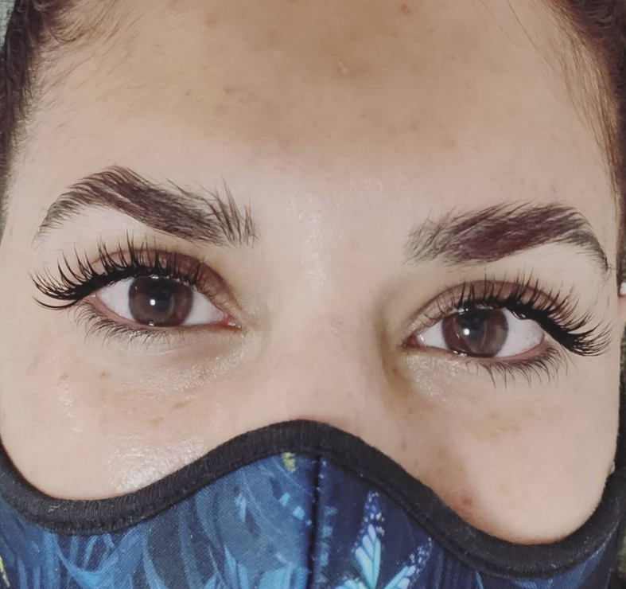
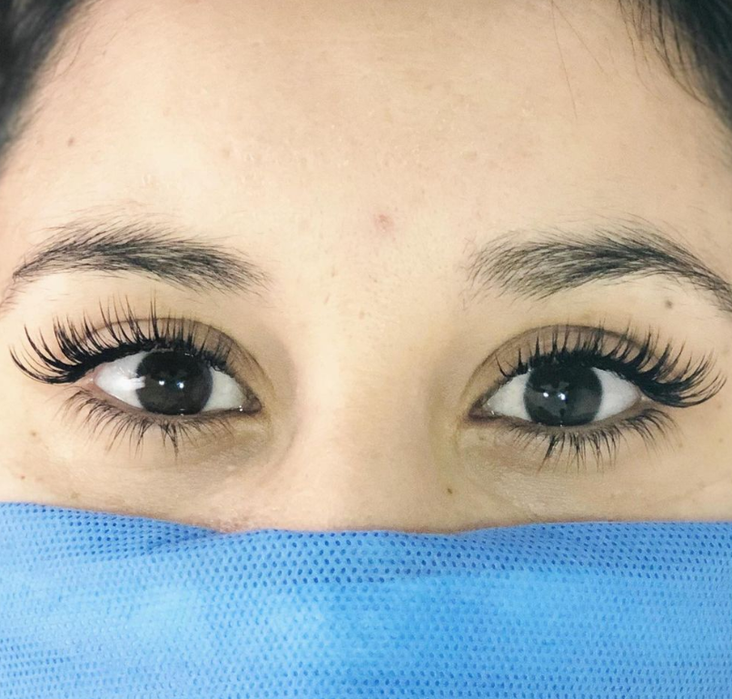
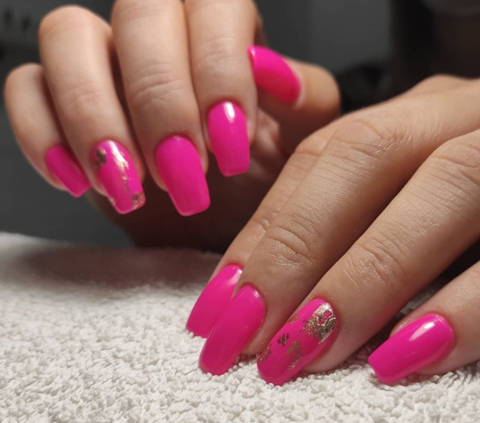
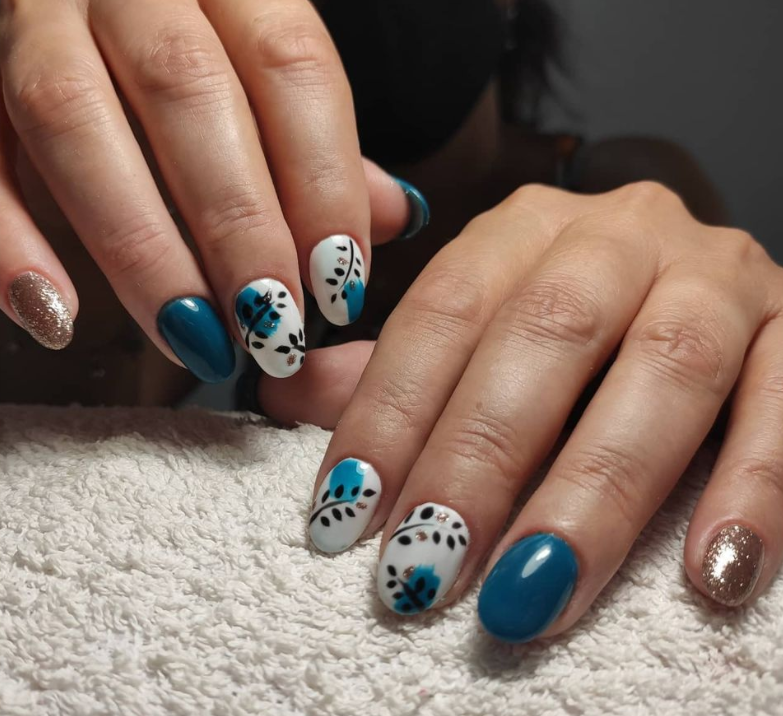

EXTENSIONES DE PESTAÑAS
Las extensiones de pestañas son usadas para mejorar la longitud, curvatura, cantidad y grosor de pestañas naturales. Las extensiones pueden ser hechas de varios materiales que incluyen sintético y seda (como nombre comercial las extensiones de pestañas se conocen en muchos casos como Mink, traducción literal del inglés de visón, aunque no por ello la extensión es de pelo de este animal, sino que el 99% son sintéticas imitación de visón). En las extensiones de pestañas, a cada pelo propio se aplica, con una técnica especial y con un adhesivo específico, hipoalergénico y a prueba de agua, una pestaña postiza de pelo sintético o natural. Se realiza con una distancia de entre 1 y 2 mm por delante de la raíz, para evitar alergias o que tu pelo natural sufra.. Pestañas postizas y extensiones de pestañas no son lo mismo.
 
ESCULPIDAS
Tiene su origen en la medicina. Las extensiones de uñas eran originalmente prótesis que debían sustituir pérdida de uñas con otras artificiales en lugar de las que ya no funcionaban. Al cliente se le lima el borde de la uña, alrededor de la extensión se pone el pegamento, siendo este de material sintético y se adhiere sobre el diseño de la uña, un trabajo que se hace con una plantilla auxiliar, se pone debajo de la natural para realizar posteriormente la continuación de la otra. Sistema de uñas también llamado uñas acrílicas. Es una derivación del sistema de uñas de porcelana. Este tipo de uñas se construye mezclando dos componentes acrílicos, un líquido (monómero) y un polvo acrílico (polímero). Al mezclar estos dos componentes se hace una pasta que se endurece o fragua al contacto con el aire, formando una capa que se adhiere de inmediato a las uñas, blanqueándolas del desgaste constante que reciben al estar expuestas a todo tipo de agresiones externas. Existen diferentes métodos para el esculpido con acrílico. La más moderna y la que supuestamente da mejor resultado es el método de las perlas: se arman perlas con un pincel especial y se aplican sobre la uña en diferentes zonas.3 Este material se distingue por tener una gran dureza.
 